Темы
1. Разминка
2. ранний интернет
3. олдскул
4. youtube
5. вконтакте
6. музыка
7. обожаю это...
8. блиц
Правила
1. Не подсматривать
2. Не гуглить
3. Не шазамить
4. Пить побольше ваши напитки
5. Кушать вкусную еду
6. Получать удовольствие
Правила тура
лёгкие вопросы - простые ответы
10 вопросов - 40 секунд на ответ
Это тренажер для чего?
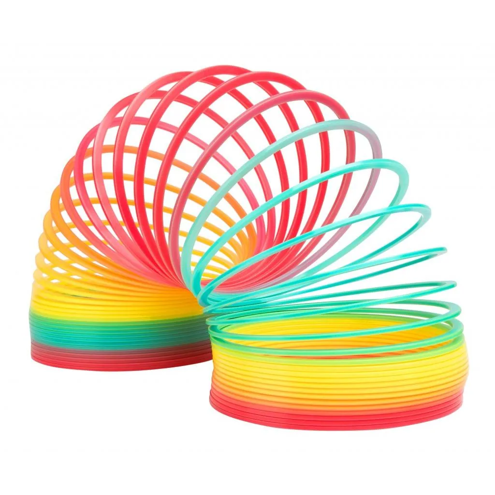
Назовите мем по скриншоту
Я хочу себе лицо... Как у кого?
Какой ID игрока в Standoff?
Закончите фразу: «Терпи, потому что...»
Что закрыто?
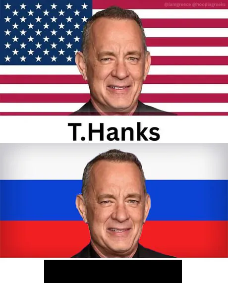
Правила тура
Времена зарождения первых мемов.
10 вопросов - 40 секунд на ответ
Что пропущено?
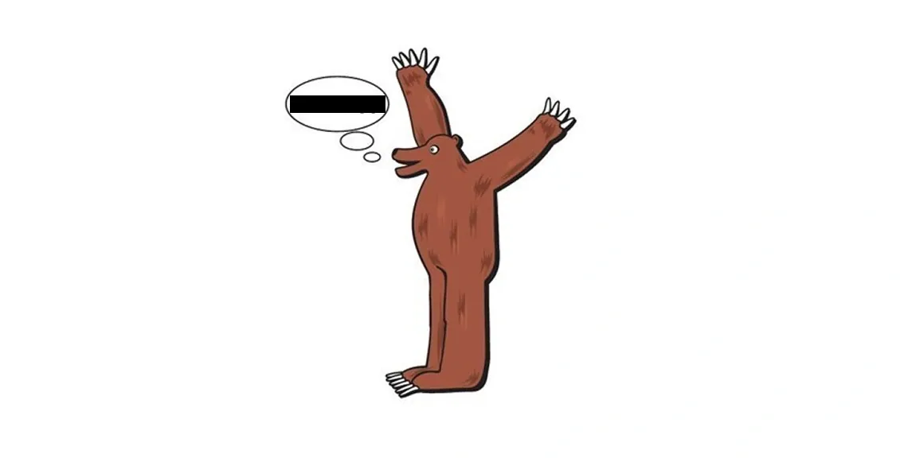
Восстановите два слова в классическом одобрительном комментарии: «Аффтар ___, пеши ___»
Какой язык предлагали выучить человеку, не понимавшему русскоязычные комментарии в ЖЖ?
В каком городе проходила свадьба, давшая название герою мема?
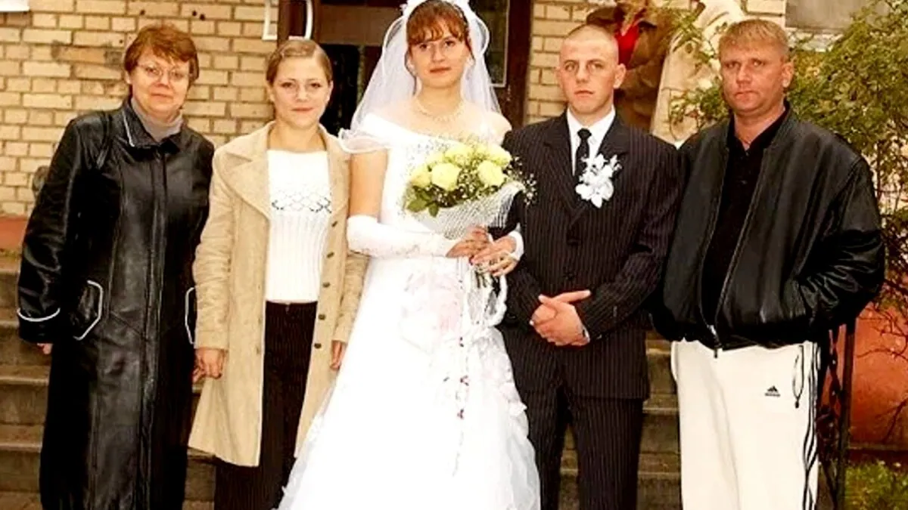
Закончите фразу раннего Рунета:
«Ф Бабруйск, ___!»
Как одним словом на жаргоне падонкафф отвечали на слишком длинный текст, который не смогли дочитать?
Как на олбанском выразить человеку похвалу?
Назовите интернет-субкультуру и сайт, чьим символом стал этот персонаж
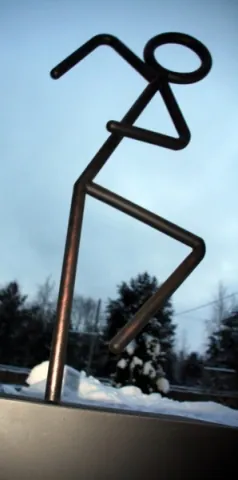
Как в раннем мемном Рунете намеренно называли кота?
Расставьте явления по времени появления в интернете — от самого раннего к самому позднему
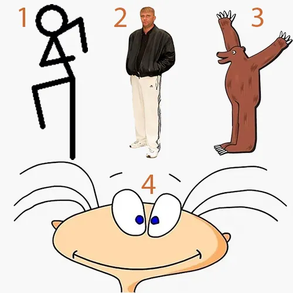
Классический одобрительный комментарий:
«Аффтар ___, пеши ___»
Классический одобрительный комментарий:
«Аффтар жжот, пеши исчо»
Какой язык предлагали выучить человеку, не понимавшему русскоязычные комментарии в ЖЖ?
олбанский
В каком городе проходила свадьба, давшая название герою мема?
Как одним словом на жаргоне падонкафф отвечали на слишком длинный текст, который не смогли дочитать?
ниасилил
Как на олбанском выразить человеку похвалу?
кросавчег
Назовите интернет-субкультуру и сайт, чьим символом стал этот персонаж.
Как в раннем мемном Рунете намеренно называли кота?
Правила тура
Олдскульные мемы
10 вопросов - 40 секунд на ответ
Как называется формат плаката с картинкой в чёрной рамке, крупным заголовком и пояснением снизу?
Восстановите английское имя этого героя Rage Comics
Какая мотивирующая подпись чаще всего сопровождала эту фотографию?
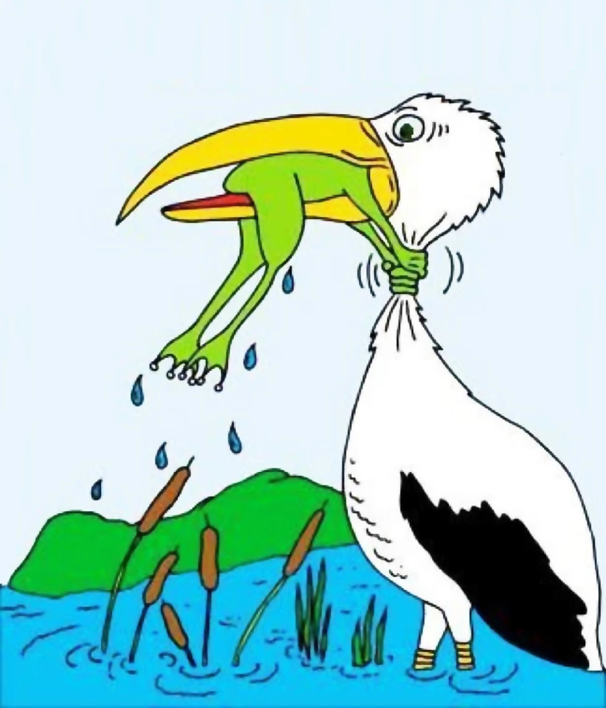
Как называется персонаж и какое действие он обычно обозначал?
Какие два испанских слова обычно стояли под этим лицом?
Какое имя часто упоминали в этом шаблоне?
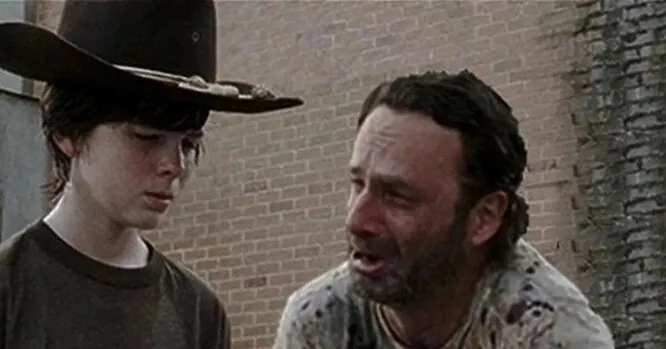
В честь какой игры он получил название?
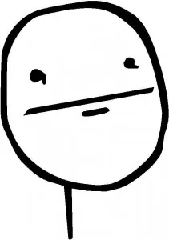
Что пропущено?
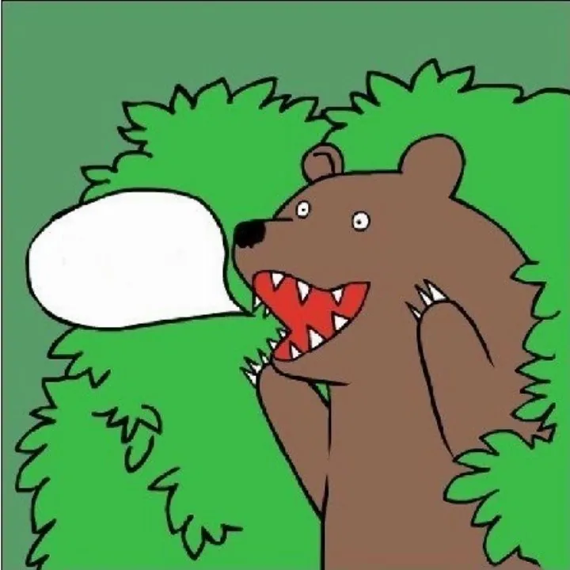
Назовите спортсмена, чьё лицо превратилось в одну из самых узнаваемых реакций Rage Comics
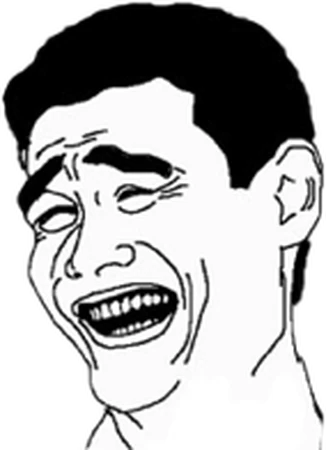
Как называется мем?
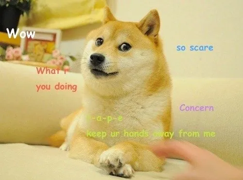
Как называется формат плаката с картинкой в чёрной рамке, крупным заголовком и пояснением снизу?
Восстановите английское имя этого героя Rage Comics
Какая мотивирующая подпись чаще всего сопровождала эту фотографию?
Какие два испанских слова обычно стояли под этим лицом?
Какое имя часто упоминали в этом шаблоне?
В честь какой игры он получил название?
Назовите спортсмена, чьё лицо превратилось в одну из самых узнаваемых реакций Rage Comics
Правила тура
Ранние мемы и видео
10 вопросов - 40 секунд на ответ
Вас всех сейчас...? (одним словом)
Назовите мем по первым 3-м секундам
Как она назвала всех этих птиц?
Назовите танец?
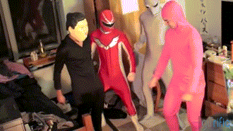
Как называется эта серия мультфильмов?
Правила тура
они завирусились в 00-е - 10-е
10 вопросов - 40 секунд на ответ
Назовите мем
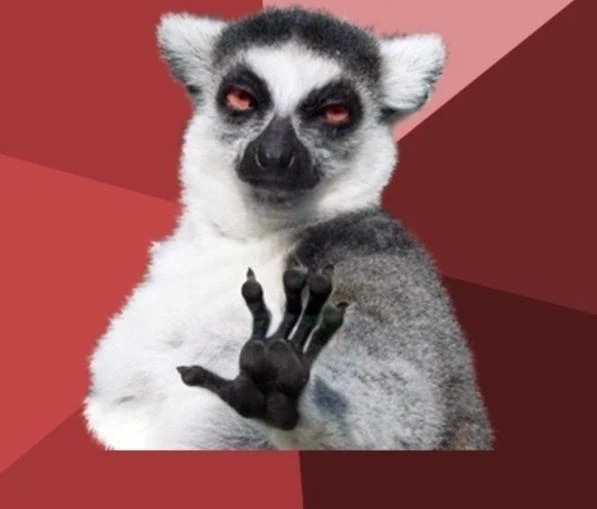
Назовите мем
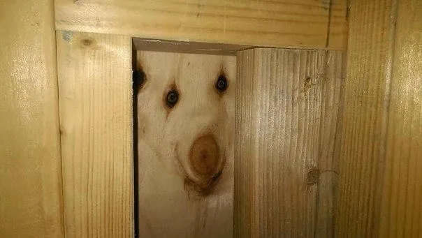
Назовите мем
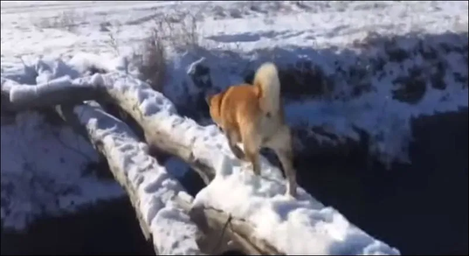
Куда нельзя просто взять и войти в изначальном варианте мема?
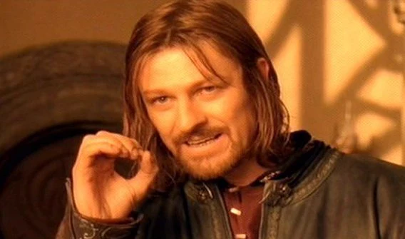
Назовите мем
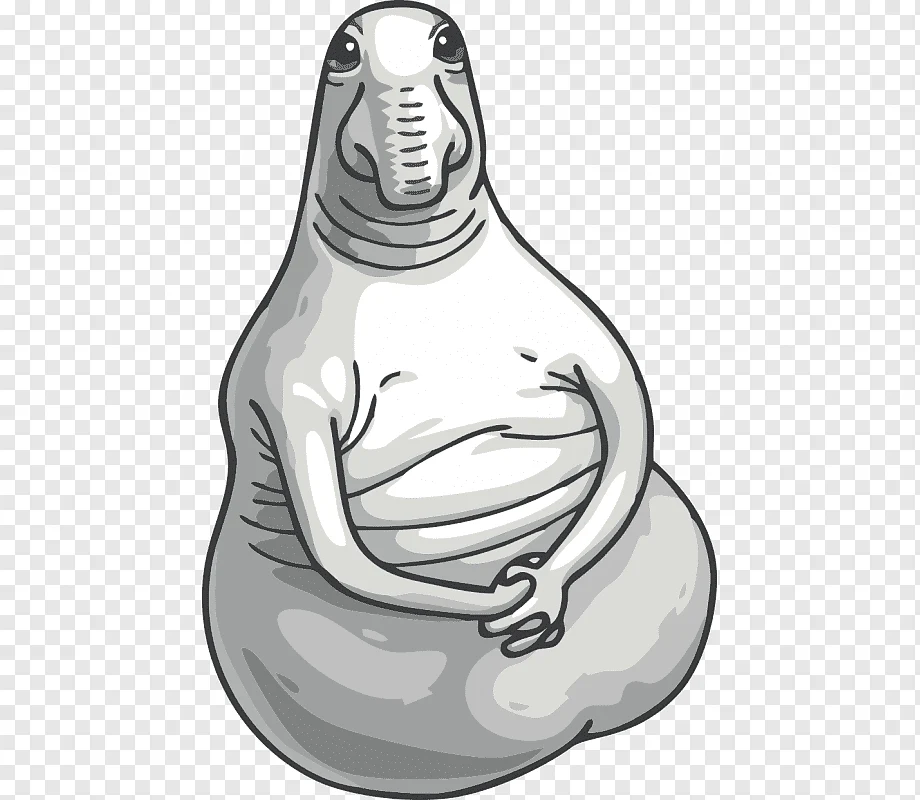
К кому обычно взывают эти коты?
Назовите мем
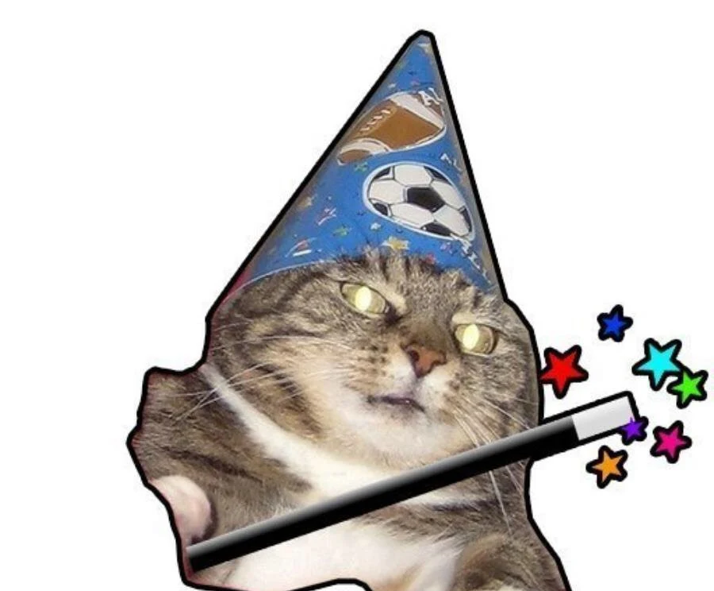
Назовите мем
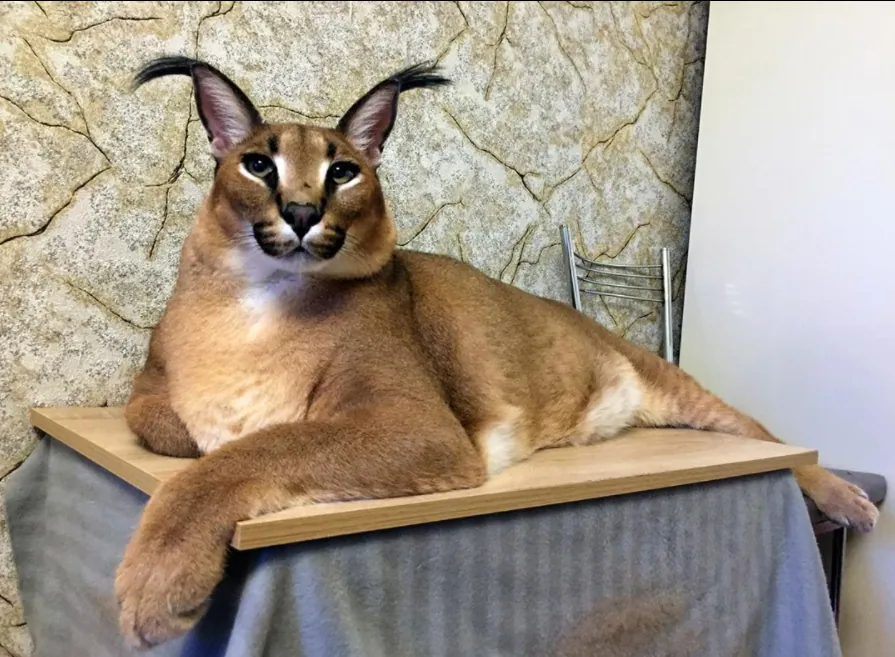
Назовите мем
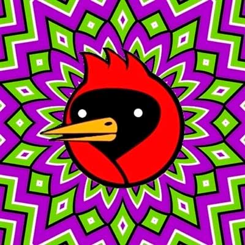
Правила тура
Слышу одно, вижу другое
10 вопросов - 40 секунд на ответ
Christell
Dubidubidu
Chipi Chipi Chapa Chapa
Mama Cass
Make Your Own Kind Of Music
PIKOTARO
PPAP (Pen Pineapple Apple Pen)
Tony Igy
Astronomia
Coffin Dance
W&W
OIIA OIIA (Spinning Cat)
Raffaella Carrà
Pedro
Raccoon Dancing in a Circle
martin garrix
animals
OKay let's Go
The Cramps - Goo Goo Muck
Lady Gaga - Bloody Mary
Wednesday Dance
Engelwood
Crystal Dolphin
Bonnie Tyler
Total Eclipse of the Heart
Turn Around
Dr. Dre
The Next Episode (ft. Snoop Dogg, Kurupt, Nate Dogg)
Witcher / Ведьмак
Toss A Coin To Your Witcher
LazyTown (Лентяево)
We are Number One
Scooter
How Much Is The Fish?
Правила тура
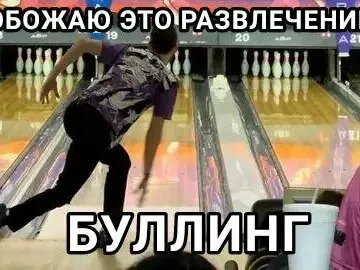
10 вопросов - 40 секунд на ответ
Правила тура
отгадайте видео-мем по скриншоту
10 вопросов - 10 секунд на ответ
somebody toucha my spaghet
похоже я выбрал неудачную неделю чтобы...
ты кто такой? давай, досвидания